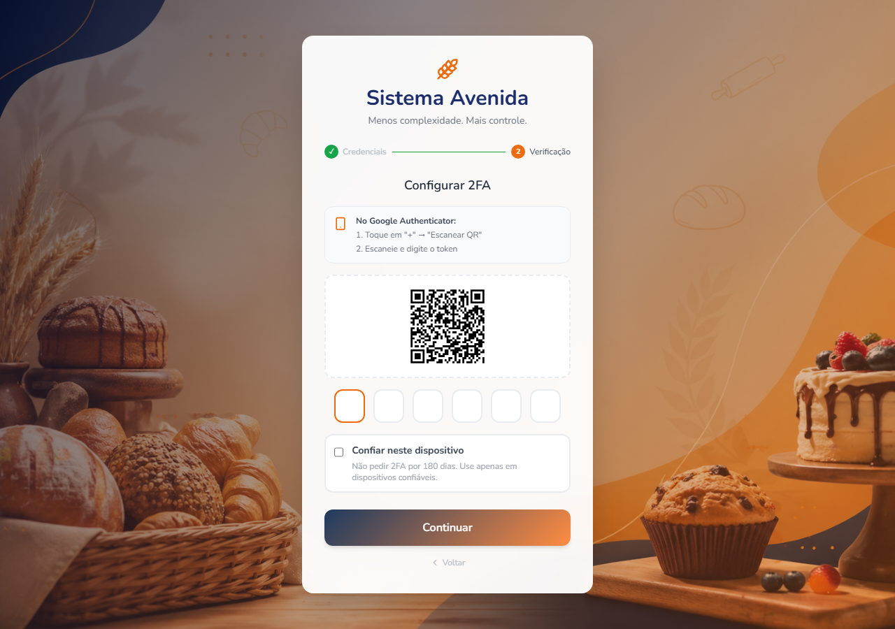

The problem
A password is a single point of failure.
It can be stolen through phishing, reused from another breached service, or guessed through credential stuffing. MFA doesn't make passwords disappear, but it means that compromising the password alone is no longer sufficient to authenticate.
The interesting part isn't generating a six-digit code. That's a solved problem.
The real engineering challenge is everything around it: choosing the right second factor, provisioning it safely, designing the login flow, handling partially completed enrollment, and reducing the friction of asking users for another credential on every login.
For this application, I chose TOTP — Time-based One-Time Passwords.
What MFA actually is
Authentication factors are commonly grouped into three categories:
- Something you know — a password or PIN.
- Something you have — a phone, authenticator, security key, or other device containing an authenticator secret.
- Something you are — a fingerprint, face, or other biometric characteristic.
MFA means combining factors from different categories.
A password plus a security question isn't really meaningful MFA: both are knowledge-based secrets and can be exposed through similar attacks. A password plus a code generated by an authenticator app is different: compromising the password doesn't give an attacker the second factor.
That distinction is important because not all MFA methods provide the same protection.
Choosing the second factor
"Something you have" leaves several implementation choices:
| Method | Advantages | Trade-offs |
|---|---|---|
| SMS codes | Familiar, simple UX | SIM swapping, carrier dependency, phishing |
| Push approval | Very convenient | Requires push infrastructure and can suffer from MFA-fatigue attacks |
| Hardware security keys | Excellent phishing resistance | Additional hardware and setup |
| Passkeys / WebAuthn | Strong phishing resistance, excellent long-term direction | More involved authentication UX and implementation |
| TOTP | Open standard, offline generation, no vendor dependency | Still vulnerable to phishing |
TOTP stood out because it gives a good balance for this particular application.
It doesn't require an SMS provider or push-notification infrastructure. It works without network connectivity on the user's authenticator device. And, most importantly, it is standardized rather than tied to a particular vendor.
TOTP is specified by RFC 6238, so users can use the authenticator application they already trust.
That last point matters more than it initially sounds.
I don't want the application to tell users:
"Install our authentication app."
I want it to say:
"Use the authenticator app you already have."
The decision: TOTP
TOTP won for three reasons:
- No SMS dependency.
- No push-notification infrastructure.
- No proprietary authenticator application.
The protocol itself is surprisingly simple.
During enrollment, the application and the authenticator establish a shared secret.
The authenticator then combines that secret with the current time and runs the standardized TOTP algorithm. The server performs the same calculation independently.
Both sides have the same inputs, so they arrive at the same code without the authenticator needing to contact the server every time it generates one.
Conceptually:
Enrollment
shared secret
│
┌─────────┴─────────┐
│ │
Server Authenticator
│ │
└────── shared ─────┘
secret
Verification
Server Phone
│ │
secret + time secret + time
│ │
TOTP TOTP
│ │
└────── same 6-digit code ────┘The time is public. The algorithm is public.
The security-sensitive value is the shared secret.
It therefore needs to be protected like an authentication credential.
One important clarification: the secret does cross the boundary during enrollment. The QR code is precisely the mechanism used to transfer that secret to the authenticator. After enrollment, however, the authenticator generates codes locally and doesn't need to communicate with the server to generate each one.
The 30-second window
TOTP uses time steps. A common configuration is a 30-second period.
That means the displayed code changes periodically rather than remaining valid indefinitely.
Clocks aren't perfect, though. A phone may be slightly ahead or behind the server.
The verifier therefore normally allows a small window around the current time step to tolerate clock drift and network/user-entry delays.
The important point is that the server's clock is authoritative; the client doesn't get to tell the server what time it is.
And TOTP has an important limitation: it is not phishing-resistant. Because the user manually enters the generated code into a website, a phishing site can relay that code to the real application while it is still valid. NIST explicitly distinguishes OTPs from phishing-resistant authenticators such as WebAuthn.
So the decision wasn't "TOTP is the strongest MFA."
It was:
TOTP provides a strong improvement over password-only authentication while keeping the implementation and user experience appropriate for this application.
The UX
The algorithm was the easy part.
The harder question was:
How do you make users perform an additional authentication step without making login annoying?
Nobody enjoys typing a six-digit code while watching it expire.
The UX therefore became part of the security design.
There are two distinct states: enrollment and verification.
Enrollment
Enrollment happens once, when the user enables MFA.
The application generates the TOTP secret and presents it as a QR code. The authenticator app scans the QR code and now has the information required to generate the same codes as the server.
But simply displaying the QR code isn't enough.
The user has to prove that the enrollment actually worked.
The flow is:
Enable MFA
│
▼
Generate secret
│
▼
Display QR code
│
▼
Authenticator scans QR
│
▼
User enters generated code
│
├── invalid ──► remain in setup
│
└── valid ───► MFA enrollment completeOnly after the first valid code is submitted does the application consider MFA enabled.
This distinction matters.
If a user scans the QR code, closes the browser, and never verifies the code, the account shouldn't suddenly become dependent on an authenticator that may not actually have been configured.

Once enrollment succeeds, the QR code should not be displayed again as part of normal login. It is provisioning material, not something required to verify an already-enrolled authenticator.
Verification
Every subsequent login is simpler.
There is no QR code.
The user enters the current six-digit code generated by their authenticator.
A countdown indicator shows how much time remains in the current TOTP window.

That countdown isn't merely decorative.
When a user sees that only two seconds remain, they understand why submitting the current code may fail and why waiting for the next code is sometimes the better option.
Small UX decisions that matter
Several small interactions make a surprisingly large difference.
Time-left indicator
The code has a limited lifetime.
Showing the remaining time turns an otherwise confusing expiration into something the user can understand.
Auto-advance
Entering a digit automatically moves focus to the next box.
The six boxes are visually separate but behave like one input.
Backspace moves backward
If the current box is empty and the user presses backspace, focus moves to the previous box.
Correcting a typo therefore doesn't require reaching for the mouse.
Autosubmit
After the sixth digit is entered, the code is submitted automatically.
There is little value in making the user enter exactly six digits and then click another button.
Trust this device
This was probably the most important UX decision.
If users have to enter a TOTP code every single time they log in, some will eventually perceive MFA as friction rather than protection.
The application therefore supports a trusted-device option.
The user can choose:
Trust this device
Once enabled, the browser can skip the TOTP prompt for a bounded period.
In this implementation, that period is 180 days.
This isn't the same thing as trusting a device forever. It is a deliberately limited session convenience.
A new browser or device still requires MFA.
The trade-off becomes:
Normal login
│
▼
Password correct
│
▼
Trusted device?
/ \
yes no
│ │
▼ ▼
Login TOTP
│
▼
LoginThe security boundary therefore moves from:
"Every login requires TOTP"
to:
"Every new or untrusted device requires TOTP."
That is a much more usable policy.
Under the hood: model the login as a state machine
The next problem wasn't cryptography.
It was the login API.
A traditional login endpoint might return something like:
{
"authenticated": false
}That isn't enough once authentication becomes a multi-step process.
The client needs to know why authentication hasn't completed and what it should do next.
The login flow therefore exposes an explicit finite set of states:
export type LoginNextStep =
| 'TOTP_SETUP_REQUIRED'
| 'TOTP_REQUIRED'
| 'AUTHENTICATED';
export interface LoginResponse {
user_name?: string;
next_step: LoginNextStep;
csrf_token?: string;
}
export interface TOTPVerificationRequest {
totp_code: string;
trust_device?: boolean;
}
export interface TOTPVerificationResponse {
user_name: string;
next_step: 'AUTHENTICATED';
csrf_token: string;
}The important design decision isn't the TypeScript syntax.
It's that the authentication endpoint owns the state transition.
The frontend doesn't independently decide whether MFA should be required.
Instead, the backend answers:
Password valid
│
▼
Is MFA enabled?
/ \
no yes
│ │
▼ ▼
AUTHENTICATED Enrollment complete?
/ \
no yes
│ │
▼ ▼
TOTP_SETUP_REQUIRED Trusted device?
/ \
yes no
│ │
▼ ▼
AUTHENTICATED TOTP_REQUIREDEvery client consuming the authentication API gets the same contract.
The web application reacts to the state rather than reimplementing the authentication rules.
The backend mirrors the same states:
class LoginFlowStep(StrEnum):
TOTP_SETUP_REQUIRED = "TOTP_SETUP_REQUIRED"
TOTP_REQUIRED = "TOTP_REQUIRED"
AUTHENTICATED = "AUTHENTICATED"The login handler then follows one ordered decision tree:
- Invalid password → reject authentication.
- MFA disabled →
AUTHENTICATED. - MFA enabled but enrollment incomplete →
TOTP_SETUP_REQUIRED. - MFA enabled and device untrusted →
TOTP_REQUIRED. - MFA enabled and device trusted →
AUTHENTICATED.
This makes the authentication flow explicit instead of spreading MFA rules across multiple endpoints and frontend components.
The csrf_token returned with AUTHENTICATED is a separate security mechanism from TOTP. In this application, it is part of the transition from authentication to an authenticated browser session. CSRF protection is covered separately here.
What "trust this device" actually means
The trusted-device feature needs its own security model.
The browser receives a random device token:
def generate_device_cookie() -> str:
return secrets.token_urlsafe(32)The server doesn't store that raw value.
Instead, it derives a fingerprint:
def compute_fingerprint(device_cookie: str) -> str:
return hashlib.sha256(
device_cookie.encode()
).hexdigest()The database stores the fingerprint together with:
- the user/account;
- expiration time;
- device metadata, if applicable;
- revocation state, if supported.
On the next login:
Browser
│
│ device cookie
▼
Server
│
│ SHA-256(cookie)
▼
Database
│
├── matching record?
├── expired?
└── revoked?
│
▼
trusted / untrustedThis means a database dump doesn't directly contain the bearer token required to authenticate the browser.
There is an important distinction here:
This is not device identification.
It is a bearer credential stored in a browser and recognized by the server.
Calling it a "device fingerprint" can therefore be misleading. The application isn't proving that the physical laptop is the same laptop. It is proving that the browser possesses a previously issued secret.
That is a much simpler and more honest security model.
Enrollment is a security boundary too
One of the easiest mistakes in MFA implementations is thinking only about the successful path.
Consider this sequence:
User enables MFA
│
▼
QR code displayed
│
▼
User scans it
│
▼
Browser closedIs MFA enabled?
It shouldn't be.
Until the user successfully verifies one TOTP code, the application hasn't established that enrollment completed successfully.
That gives the system a clean invariant:
MFA is either not enrolled, or fully enrolled. There is no partially enrolled authentication state that can lock the user out.
The same principle should apply when changing or removing an existing MFA factor. Factor replacement is a high-risk account operation and should require appropriate reauthentication and recovery controls. OWASP recommends treating MFA reset and factor changes as sensitive operations rather than ordinary profile updates.
The security details that are easy to miss
TOTP itself is standardized, but a secure implementation still has several responsibilities around it.
Protect the TOTP secret
The server must retain the secret because it needs to independently calculate the expected code.
That secret therefore deserves stronger protection than ordinary application data.
A database leak containing TOTP seeds is much more serious than a database leak containing already-expired OTP codes: the seed is the long-lived credential from which future codes can be generated.
Rate-limit verification
A six-digit code has a relatively small search space.
The application therefore needs authentication-attempt rate limiting and lockout/abuse controls around TOTP verification.
The user should not be able to submit millions of guesses against an account.
Prevent replay
A valid TOTP shouldn't simply be accepted repeatedly during its validity period.
The verifier should track successful use of the relevant time step where appropriate so that the same OTP cannot simply be replayed. NIST explicitly requires OTP verifiers to accept a given OTP only once while it is valid.
Don't log the code
OTP values should never end up in application logs, traces, exception messages, or analytics.
Logs are often accessible to far more systems and people than the authentication database.
Protect recovery
MFA creates a new problem:
What happens when the user loses the authenticator?
The recovery mechanism is part of the MFA security boundary.
If an attacker can simply click "I lost my authenticator" and receive an email link that bypasses MFA, then the attacker has found a weaker authentication path around the stronger factor.
Recovery therefore needs to be designed with at least as much care as enrollment.
The outcome
The result isn't just "we added six-digit codes."
It's a login flow with an explicit authentication state machine, one-time enrollment, TOTP verification, trusted-device handling, and a UX designed around the actual properties of the protocol.
For users, MFA becomes almost invisible after the initial setup:
First login after enrollment
Password
│
▼
TOTP
│
▼
Trust device ──► LoginLater logins from that browser can simply become:
Password
│
▼
Loginwhile a new or untrusted browser still requires:
Password
│
▼
TOTP
│
▼
LoginThe important lesson is that implementing MFA is not primarily a cryptography problem.
The cryptography already exists in a standard.
The engineering work is integrating that standard into the rest of the authentication system without creating weaker recovery paths, ambiguous authentication states, or unnecessary user friction.
TOTP was the right trade-off for this application, but it is not the final word in authentication security. For applications with stronger phishing-resistance requirements, WebAuthn/passkeys are the better direction. NIST's current guidance explicitly treats OTP as non-phishing-resistant while requiring phishing-resistant options at higher assurance levels.
The principle is therefore simple:
Choose the strongest authentication mechanism your threat model requires — then spend just as much engineering effort making the secure path the easiest path.